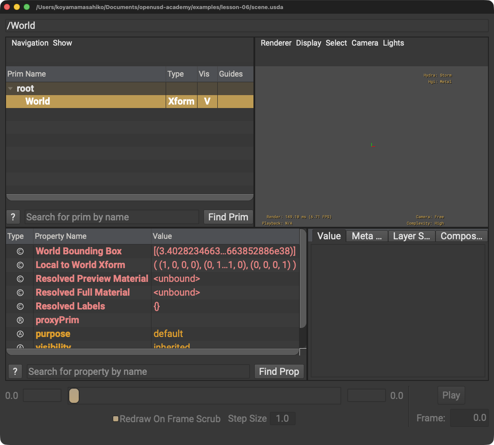

USDは常にテキストだと思う
.usdにはUTF-8テキストまたはCrateバイナリを格納できます。形式指定がなければ既定はCrateバイナリです。
STEP 05 · FOUNDATIONS
中身と用途からOpenUSDのファイル形式を選びます
今日これだけ
公式情報に基づく説明
USDAは人が読めるUTF-8テキスト形式です。USDCはランダムアクセスに対応するバイナリのCrate形式です。.usdはUTF-8テキストまたはCrateバイナリのどちらも格納できます。作成時に形式引数や環境変数で指定しなければ、.usdの既定形式はCrateバイナリです。USDZは複数アセットを一つにまとめる非圧縮ZIPアーカイブで、配布向けの読み取り専用パッケージとして扱われます。
USDA
#usda 1.0
def Xform "World"
{
}#usda 1.0はUSDAファイルの先頭に置く識別行です。#で始まりますが、この行は通常のコメントではありません。引用符はPrim名、波括弧はPrimの内容を囲みます。

scene.usdaを開くとWorld Primが現れます。同じシーン記述はUSDCやUSDにも保存できます。Diagram
.usdはUTF-8テキストまたはCrateバイナリを格納できますPython
from pxr import Usd, UsdGeom
for filename in ("scene.usda", "scene.usdc", "scene.usd"):
stage = Usd.Stage.CreateNew(filename)
UsdGeom.Xform.Define(stage, "/World")
stage.Save()forは同じ処理を順番に繰り返します。丸括弧内の三つの引用符付き文字列がファイル名で、カンマが項目を区切ります。Pythonのインデントされた3行が繰り返しの範囲です。USDZは複数ファイルをまとめる配布パッケージなので、この編集用Stage作成例には含めません。
USDA → Python mapping
USDA
#usda 1.0↓Python
Usd.Stage.CreateNew("scene.usda")USDC
バイナリのCrate形式↓Python
Usd.Stage.CreateNew("scene.usdc")USD
UTF-8テキストまたはCrateバイナリ↓Python
Usd.Stage.CreateNew("scene.usd")Beginner notes
よくある間違い
.usdにはUTF-8テキストまたはCrateバイナリを格納できます。形式指定がなければ既定はCrateバイナリです。
USDZは配布向けの読み取り専用パッケージです。編集作業は元のUSDアセットで行います。
USDCはバイナリ形式です。人が直接読む用途にはUSDAを使います。
Glossary
Official references
確認日: